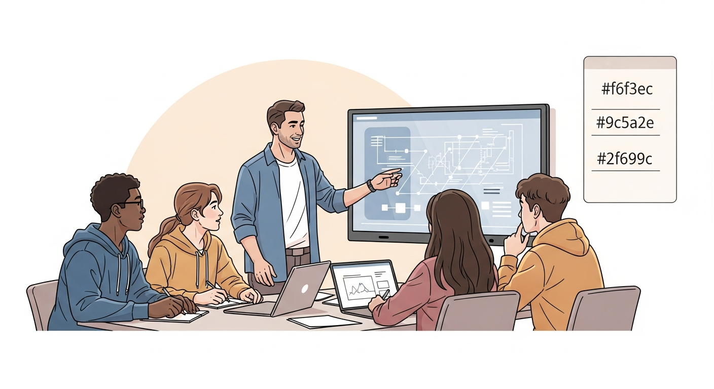

Imperfect Student Simulations using LLMs
Imperfect student simulations with LLMs to model realistic misunderstandings and learning gaps.
I supervised these graduate and undergraduate projects across vision, language, and multimodal AI. For ongoing work, see current students and recent publications.

Imperfect student simulations with LLMs to model realistic misunderstandings and learning gaps.

Explored diffusion-based de-warping for images with severe geometric distortion. Iterative restoration recovered structure and detail beyond traditional correction pipelines.

Implemented graph-based label propagation over image-similarity networks for large photo sets. The method improved tag consistency when individual images had weak local evidence.

Designed an active-vision pipeline that scans scenes coarsely, then captures high-value regions at high resolution. This reduced bandwidth while preserving captioning and scene-understanding quality.

Built a classifier tuned for low-light imagery with illumination-aware preprocessing and robust feature extraction. It improved recognition on dark, noisy, and low-contrast scenes.

Developed real-time alarm detection for critical sounds such as fire alarms and doorbells. The system supports visual or haptic alerts for hearing-impaired users.

Developed a vision system that detects and classifies dashboard controls, indicators, and display elements. The solution supports reliable mapping of in-cabin interfaces for assistive and testing workflows.

Developed a haze-aware detector that compensates for visibility loss in foggy scenes. Preprocessing and robustness training improved detection consistency under adverse weather.

Implemented image mosaicking with SLAM-based camera tracking to build large panoramas from overlapping views. The method reduced drift and improved alignment on long sequences.

Built a speech interface focused on short interjections such as "hmm" and "uh-huh." The model improved recognition of quick conversational signals in noisy settings.

Explored selective inference strategies that route uncertain samples to heavier deep models. This reduced average compute cost while preserving target accuracy.

Designed a first-person video model for recognizing human interactions in egocentric scenes. Temporal cues and viewpoint-aware features improved robustness in daily-life recordings.

Evaluated curriculum learning schedules by ordering training samples from easier to harder. The approach stabilized optimization and improved performance under limited training budgets.

Developed a model that performs segmentation and super-resolution in one pass. Shared features across tasks improved boundary quality and detail recovery on low-resolution images.

Built a stereo imaging setup to capture synchronized plant views and reconstruct root structures in 3D. The system enabled non-destructive monitoring of root morphology and growth over time.

Built a bookmark tagging pipeline that analyzes page text and metadata to assign tags automatically. This improved organization and retrieval without manual labeling.